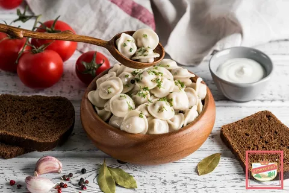

Наши блюда

Фирменные говяжьи пельмени

Китайские Цзяоцзы

Вареники с Вишней
Фирменные говяжьи пельмени
Китайские Цзяоцзы
Вареники с Вишней
В самом сердце Челябинска, на уютной улочке с яркими вывесками и шумом городских будней, располагалась пельменная под названием «ПельмениЧлб». Этот маленький, но очень популярный ресторанчик стал настоящей изюминкой города благодаря своей дружелюбной атмосфере и, конечно же, исключительным пельменям..